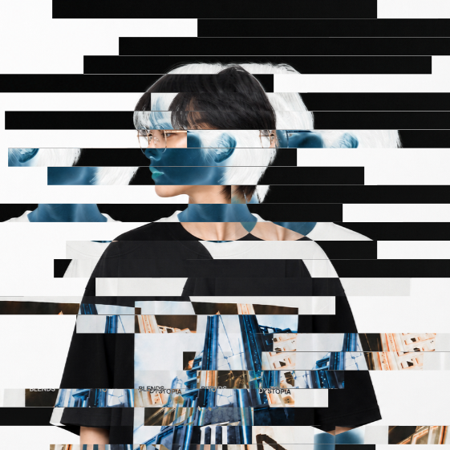

NIF / ALIVE · 2026
Hi, I'm IKKI.
SOON TO BE CONTENT CREATOR • NO, I'M NOT MARRIED YET
Hi, there :D
I'm Nandara Ishiki Yui Febriansyah, and I make... well... modpacks and... something else I guess.
I'm still figuring out this whole website thing, so don't expect anything too serious.

PROJECTS
03
Minecraft modpack projects.
CURRENTLY
Making Minecraft stuff, experimenting with new ideas, and slowly figuring out what the hell I'm doing. Not only did i make minecraft modpack, i do create minecraft skins for fun. I've currently experimenting on soft shading, minecraft trailer-ish design. I also love to create a lore to my skin so maybe in the future i'll publish a lore to each character and skin that i was making to public.
CORE EXPERTISE
SELECTED WORK
LOOKING FOR ME?
Find me somewhere
on the internet.